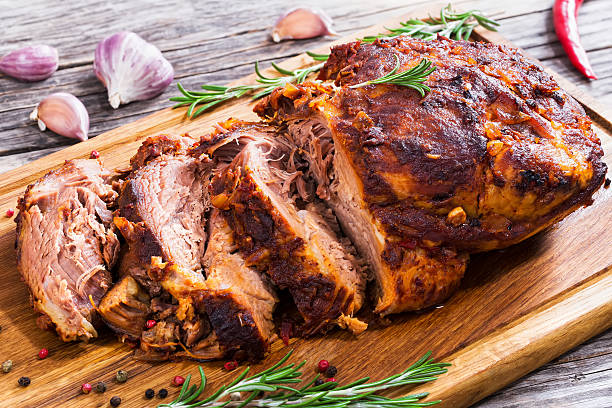

lamb shoulder
- boned-out front shoulder of lamb or mutton
- marinade:
- handful of fresh rosemary and thyme, finely chopped
- 2 cloves garlic, crushed
- 2 tablespoon wholegrain mustard
- 200ml (7 fl oz) olive oil
- 2 tablespoon apple cider vinegar or lemon juice
- salt and pepper
- clean, heavy river rock or heavy cast iron lid

directions:
- prepare the shoulder of lamb or mutton. trim off bad bits of fat around the sides of the meat, but leave a thin layer of fat (this adds flavor).
- to make the marinade, place herbs, garlic, mustard, oil, vinegar or lemon juice, salt and pepper into a clean jam jar. place the lid on tightly and shake the jar until the colour becomes cloudy and the marinade becomes thick. lie the boned out piece of meat on a chopping board and spread the marinade all over. roll it up and place it in a bowl. pour the remaining marinade into the bowl. cover and place into the fridge to chill for a few hours.
- preheat the barbecue. sear the shoulder on both sides. turn the barbecue to a low heat, pressing the meat down with the weight of either a heavy river rock or cast iron lid. close the hood. if you dont have a hood and you're using a rock for the weight, cover with a bit of tinfoil or the lod of a roasting dish.
- cook for 30-40 minutes. check with a skewer or meat thermometer for clear running juic or a temp of 70*c. (barbecues run at different temperatures so check it often).